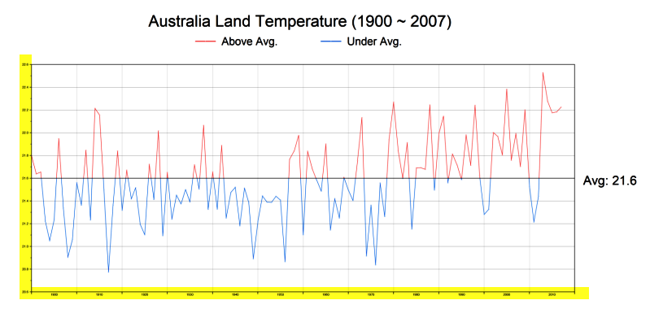
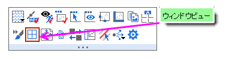

FAQ-1157 画像または動画にエクスポートすると、目盛ラベルが非常に小さくなるのはなぜですか?
tick-label-export-small
最終更新日：2022/10/26
エクスポートされたラスターイメージ (PNG など) または動画 (AVI など) の目盛ラベルが非常に小さく表示される場合は、グラフウィンドウがウィンドウビューになっていないかを確認してください。
ブラウザグラフの場合、デフォルトでウィンドウビューで作成されることに注意してください。

解決策は以下の通りです。
- まず、エクスポートする前にページビューに切り替えます。
- ウィンドウのタイトルバーのすぐ下をクリックし、ミニ ツールバーが表示されたら、 ウィンドウビューボタンの横に赤いチェックマークがないことを確認します。
- チェックマークがついていたら、クリックしてクリアします。
- 
- 画像ファイルにエクスポートする場合は、ベクター形式 (SVG、EMF など) に切り替えてみてください。
キーワード:ウィンドウビュー, ブラウザグラフ, ラスター, ベクター, ページビュー, SVG, EMF, AVI, GIF, TIFF